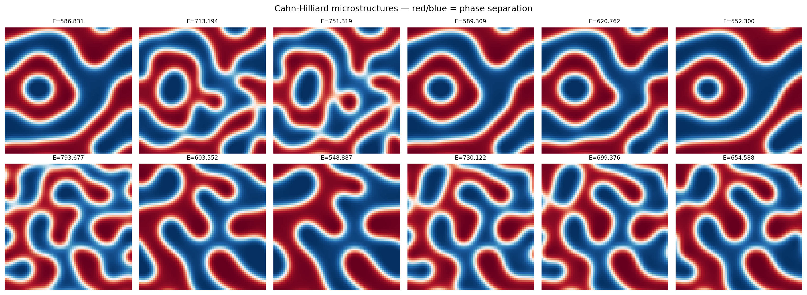
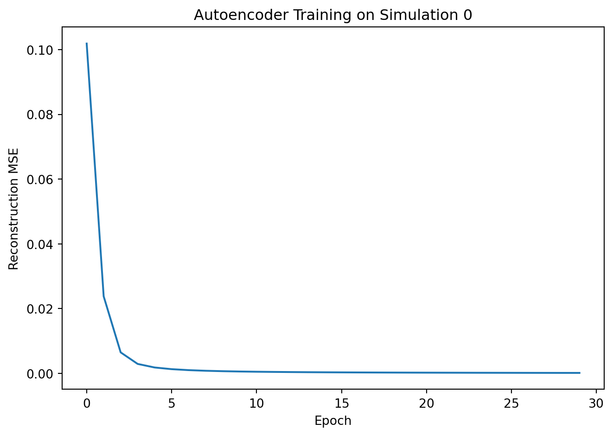
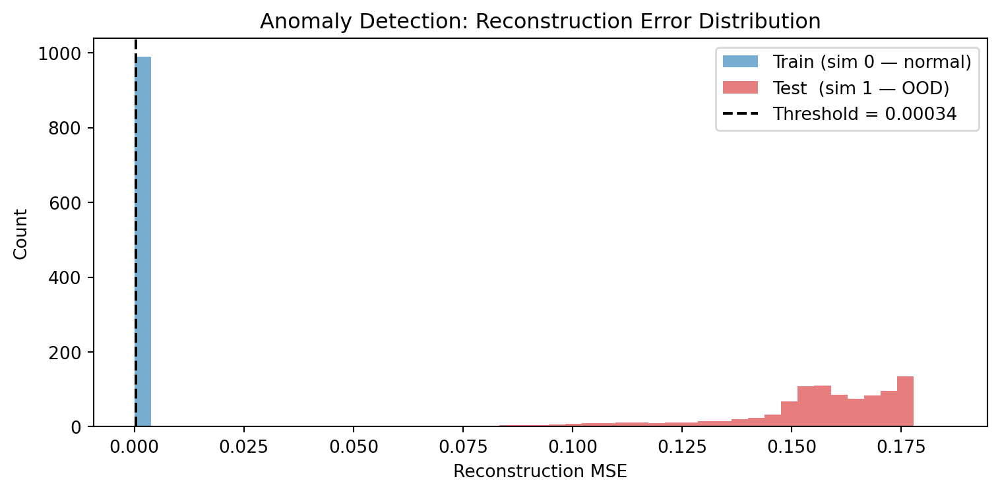
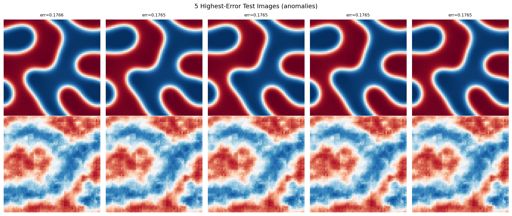

!pip install git+https://github.com/ECLIPSE-Lab/Ai4MatLectures.git "mdsdata>=0.1.5"MLPC Week 11: Anomaly Detection with Autoencoders
Reconstruction error as anomaly score on CahnHilliardDataset

Learning Objectives
- Use an autoencoder’s reconstruction error as an anomaly score
- Train on one distribution and detect samples from a different distribution
- Set detection thresholds and visualize highest-error samples
Setup
import torch
import torch.nn as nn
from torch.utils.data import DataLoader
from ai4mat.datasets import CahnHilliardDataset
import matplotlib.pyplot as plt
import numpy as np1. Load the Data
We train on one simulation and treat a different simulation as “out-of-distribution” (anomalous).
train_dataset = CahnHilliardDataset(simulation_number=0)
test_dataset = CahnHilliardDataset(simulation_number=1)
print(f"Train dataset (sim 0): {len(train_dataset)} samples")
print(f"Test dataset (sim 1): {len(test_dataset)} samples")
x0, y0 = train_dataset[0]
print(f"\nSample x shape: {x0.shape} (1, 64, 64)")
print(f"Sample y (energy): {y0:.4f}")Train dataset (sim 0): 989 samples
Test dataset (sim 1): 992 samples
Sample x shape: torch.Size([1, 64, 64]) (1, 64, 64)
Sample y (energy): 586.8312# Visualize microstructure snapshots from both simulations
fig, axes = plt.subplots(2, 6, figsize=(16, 6))
for i in range(6):
idx = i * (len(train_dataset) // 6)
axes[0, i].imshow(train_dataset[idx][0].squeeze().numpy(), cmap='RdBu_r', vmin=0, vmax=1)
axes[0, i].set_title(f"E={train_dataset[idx][1]:.3f}", fontsize=8)
axes[0, i].axis('off')
axes[1, i].imshow(test_dataset[idx][0].squeeze().numpy(), cmap='RdBu_r', vmin=0, vmax=1)
axes[1, i].set_title(f"E={test_dataset[idx][1]:.3f}", fontsize=8)
axes[1, i].axis('off')
axes[0, 0].set_ylabel("Sim 0 (train)", fontsize=9)
axes[1, 0].set_ylabel("Sim 1 (test)", fontsize=9)
plt.suptitle("Cahn-Hilliard microstructures — red/blue = phase separation")
plt.tight_layout()
plt.show()
2. Build the Autoencoder
class ConvAutoencoder(nn.Module):
def __init__(self, latent_dim=2):
super().__init__()
self.encoder = nn.Sequential(
nn.Conv2d(1, 16, 3, stride=2, padding=1), # 32x32
nn.ReLU(),
nn.Conv2d(16, 32, 3, stride=2, padding=1), # 16x16
nn.ReLU(),
nn.Flatten(),
nn.Linear(32 * 16 * 16, latent_dim)
)
self.decoder = nn.Sequential(
nn.Linear(latent_dim, 32 * 16 * 16),
nn.ReLU(),
nn.Unflatten(1, (32, 16, 16)),
nn.ConvTranspose2d(32, 16, 3, stride=2, padding=1, output_padding=1), # 32x32
nn.ReLU(),
nn.ConvTranspose2d(16, 1, 3, stride=2, padding=1, output_padding=1), # 64x64
nn.Sigmoid()
)
def forward(self, x):
z = self.encoder(x)
return self.decoder(z), z
model = ConvAutoencoder(latent_dim=16)
n_params = sum(p.numel() for p in model.parameters())
print(f"Autoencoder parameters: {n_params:,}")Autoencoder parameters: 279,9213. Train on Simulation 0
train_loader = DataLoader(train_dataset, batch_size=32, shuffle=True)
criterion = nn.MSELoss()
optimizer = torch.optim.Adam(model.parameters(), lr=1e-3)
train_losses = []
for epoch in range(30):
model.train()
ep_loss = 0.0
for x_batch, _ in train_loader: # labels (energy) not used during AE training
optimizer.zero_grad()
x_recon, _ = model(x_batch)
loss = criterion(x_recon, x_batch)
loss.backward()
optimizer.step()
ep_loss += loss.item() * len(x_batch)
train_losses.append(ep_loss / len(train_dataset))
if (epoch + 1) % 10 == 0:
print(f"Epoch {epoch+1:3d} | Train recon MSE: {train_losses[-1]:.5f}")
plt.plot(train_losses)
plt.xlabel("Epoch"); plt.ylabel("Reconstruction MSE")
plt.title("Autoencoder Training on Simulation 0")
plt.tight_layout(); plt.show()Epoch 10 | Train recon MSE: 0.00056
Epoch 20 | Train recon MSE: 0.00021
Epoch 30 | Train recon MSE: 0.00013
4. Score: Reconstruction Error as Anomaly Signal
def compute_errors(dataset, model, batch_size=64):
"""Return per-sample reconstruction MSE."""
loader = DataLoader(dataset, batch_size=batch_size, shuffle=False)
errors = []
model.eval()
with torch.no_grad():
for x_batch, _ in loader:
x_recon, _ = model(x_batch)
# Per-sample MSE: mean over pixels
per_sample = ((x_recon - x_batch) ** 2).mean(dim=(1, 2, 3))
errors.extend(per_sample.numpy().tolist())
return np.array(errors)
errors_train = compute_errors(train_dataset, model)
errors_test = compute_errors(test_dataset, model)
print(f"Train (sim 0) — mean error: {errors_train.mean():.5f} ± {errors_train.std():.5f}")
print(f"Test (sim 1) — mean error: {errors_test.mean():.5f} ± {errors_test.std():.5f}")Train (sim 0) — mean error: 0.00012 ± 0.00011
Test (sim 1) — mean error: 0.15296 ± 0.023725. Detect Anomalies
# Histogram of reconstruction errors
plt.figure(figsize=(8, 4))
bins = np.linspace(0, max(errors_train.max(), errors_test.max()) * 1.05, 50)
plt.hist(errors_train, bins=bins, alpha=0.6, color='tab:blue', label='Train (sim 0 — normal)')
plt.hist(errors_test, bins=bins, alpha=0.6, color='tab:red', label='Test (sim 1 — OOD)')
# Simple threshold: mean + 2*std of training errors
threshold = errors_train.mean() + 2 * errors_train.std()
plt.axvline(threshold, color='black', linestyle='--', label=f'Threshold = {threshold:.5f}')
plt.xlabel("Reconstruction MSE"); plt.ylabel("Count")
plt.title("Anomaly Detection: Reconstruction Error Distribution")
plt.legend(); plt.tight_layout(); plt.show()
flagged_train = (errors_train > threshold).mean() * 100
flagged_test = (errors_test > threshold).mean() * 100
print(f"\nFlagged as anomalous:")
print(f" Train (sim 0): {flagged_train:.1f}% (false positive rate)")
print(f" Test (sim 1): {flagged_test:.1f}% (detection rate)")
Flagged as anomalous:
Train (sim 0): 5.0% (false positive rate)
Test (sim 1): 100.0% (detection rate)# Show the 5 highest-error images alongside their reconstructions
top5_idx = np.argsort(errors_test)[-5:][::-1]
fig, axes = plt.subplots(2, 5, figsize=(14, 6))
for col, idx in enumerate(top5_idx):
x_orig = test_dataset[idx][0].unsqueeze(0)
with torch.no_grad():
x_recon, _ = model(x_orig)
axes[0, col].imshow(x_orig.squeeze().numpy(), cmap='RdBu_r', vmin=0, vmax=1)
axes[0, col].set_title(f"err={errors_test[idx]:.4f}", fontsize=8)
axes[0, col].axis('off')
axes[1, col].imshow(x_recon.squeeze().numpy(), cmap='RdBu_r', vmin=0, vmax=1)
axes[1, col].axis('off')
axes[0, 0].set_ylabel("Original (sim 1)", fontsize=9)
axes[1, 0].set_ylabel("Reconstructed", fontsize=9)
plt.suptitle("5 Highest-Error Test Images (anomalies)")
plt.tight_layout()
plt.show()
Exercises
- What threshold would you set to catch 90% of simulation-1 samples while keeping the false positive rate below 10%? Adjust the multiplier in
mean + k * std. - Try training on
simulation_number=[0, 1, 2](three simulations combined). Does the detection rate for simulation-1 samples decrease? What does this tell you about the training distribution? - What other types of microstructure anomalies could this approach detect — for example, images with different phase fractions, coarser morphology, or added noise?